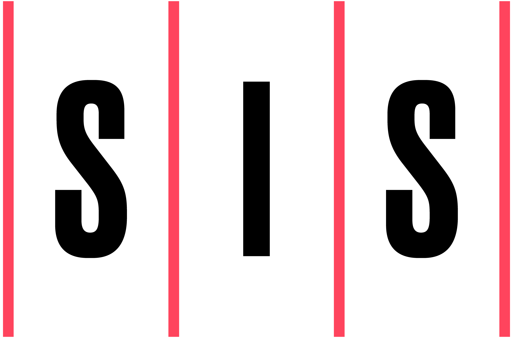

A Bit About Me
Hi 👋 I currently work as a Basketball Data Analyst for the Golden State Warriors. I have an M.S. in Applied Data Science from the University of Michigan. I have a B.A. in Psychology and Economics from Northwestern University. My work focuses primarily on building web applications, data pipelines, and data visualizations. In my free time, I enjoy learning new programming languages and cooking recipes. Check out some of my projects below👇
Stack
Primary programming languages for day-to-day responsibilities & side projects
Experience
Extensive experience working in & around various sides of basketball
Other Tools
Technologies for web application development & version control